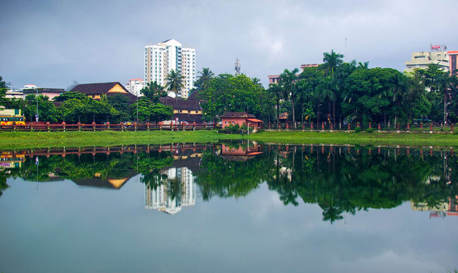

01.Kozhikode Beach

Situated on the Malabar coast and endowed with natural beauty, Kozhikode beach should be a must in the itinerary of your visit to the city. This beach is renowned for the sunsets that tourists throng here to enjoy. Though the water is muddy and not suitable for swimming, still the stunning view of the Arabian Sea that the lighthouse offers more than compensates for the shortcoming.
Payannakal, Putiyappa, Elathur, Beypore, all these beaches are part of the long stretch of Kozhikode beach. This beach lies on the western side of the city and is easily accessible through the four roads in the city.
Location: Malabar Coast
Price: bThere is no fee to be paid to visit the beach.
Timing: The beach is open on all days to the tourists from 8 A.M. to 8 P.M. in the early hours visitors can see the real-life dolphin shows.
Best Time to Visit:
September to May.
02.Mananchira

Previously known as Mananchira Maidan, this place held many football matches. Mananchira scores high as one of the places to visit in Kozhikode. This place provides tranquility to the visitors which is much sought after as one wants to escape the chaotic city life. It is a beautiful park covered with lawns, traditional buildings, a musical fountain, and an open-air theatre. This park is built around a man-made lake known as Mananchira lake.
One must not forget to visit Mananchira or Mana Vikraman Tank which was the primary water source for the royal family and is maintained till date in its pristine beauty. Mananchira is the best place for an evening stroll or to enjoy a picnic with families and friends. This park is popular among tourists and locals because of its natural sculptures and natural beauty.
Location: In the heart of the Kozhikode city
Price: There is no entry fee for this place
Timing: Monday to Sunday 3:30 P.M. to 8 P.M.
Best Time to Visit: October to April
03.Beypore Beach

Situated near the mouth of Chaliyar river, Beypore beach is a famous tourist destination. Your visit to Kozhikode remains incomplete without a day spent at Beypore beach. There is never a dearth of activities once you are at the beach. Clearly, one of the favourite tourist places to visit in Kozhikode, this beach takes into a different world with its numerous fun-filled activities to keep you engaged as it offers abundant water activities like surfing, sunbathing, water skiing and swimming.
You can take in the vast expanse of rich golden sand, coconut trees that dot the coastline or the stone bridge known as Pulimoodu, which builds a pathway into the sea. There is never a dull moment at the beach and you can pamper yourself in a refreshing Ayurveda massage.
Location: Near the Chaliyar River
Price: No Entry Fee
Timings: 24 hrs
Best Time to Visit: October to March